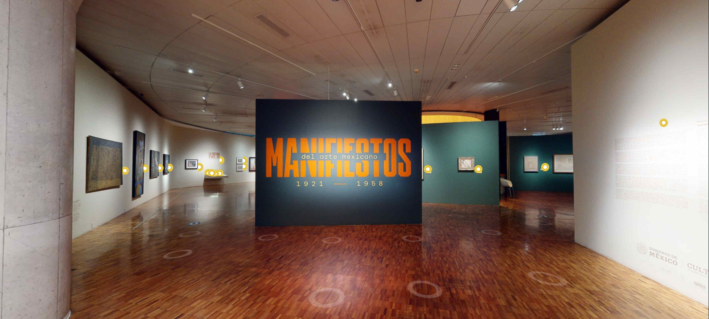
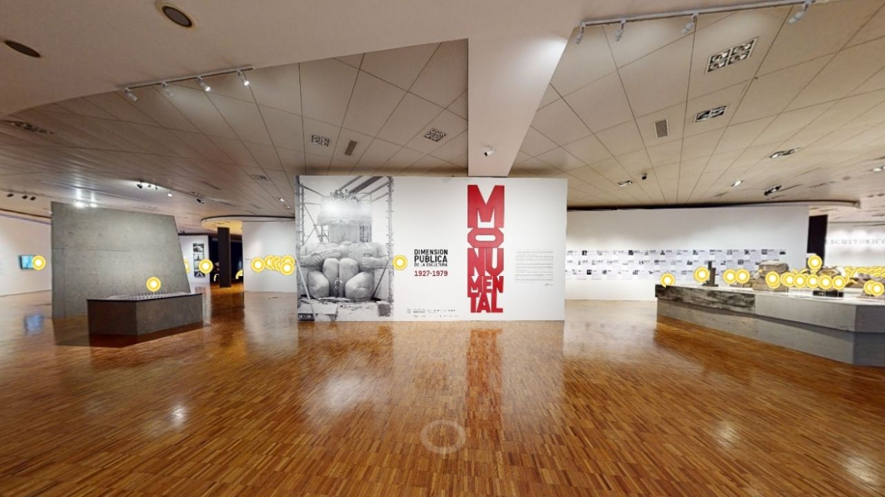
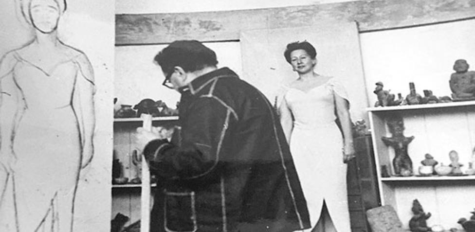
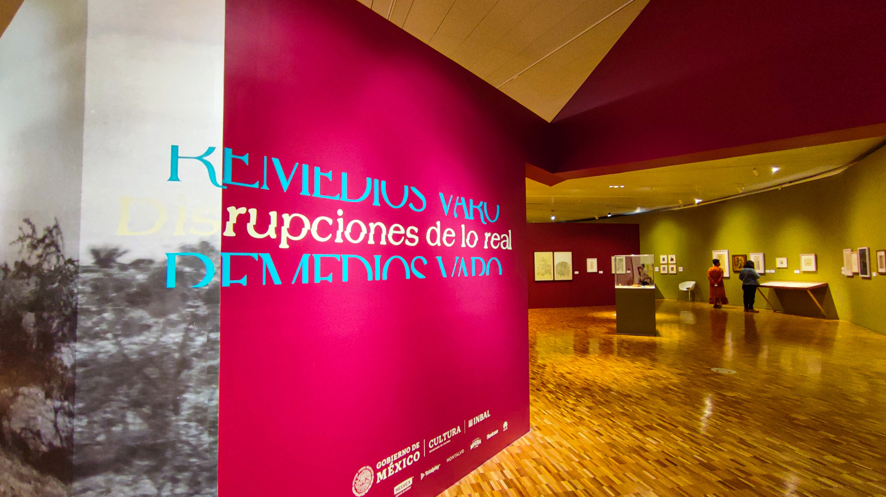
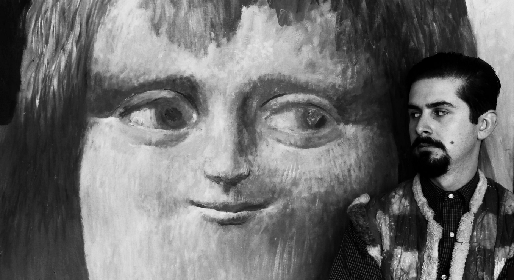

PAISAJES FRAGMENTADOS
Esta muestra reúne un panorama heterogéneo de pintura, gráfica, fotografía y escultura producida en
México, entre 1975 y 1994, periodo caracterizado por la diversidad de las manifestaciones estéticas,
reflejo de un momento cultural y político crítico.
Paisajes fragmentados presenta obra de artistas como Xavier Esqueda, Julio Galán, Eloy Tarcisio,
Mónica Castillo, Yolanda Andrade, Marco Antonio Cruz, etc.

MANIFIESTOS DEL ARTE MEXICANO
Manifiestos es una exposición que nos muestra la reunión que hubo entre David Alfaro
Siqueiros y Diego Rivera en París para darle comienzó a un proyecto que después seria
conocido hoy en día como el muralismo mexicano. Siqueiros lanzó desde Barcelona el
primer manifiesto del arte mexicano. Dicho documento es la referencia de origen para
toda elaboración posterior sobre la estética nacional, la modernidad y la independencia
del arte con respecto de la academia y otros yugos institucionales.

TERRITORIOS DE LA MEMORIA
Territorios de la memoria presenta un panorama del periodo 1985-2018, marcado por
transiciones en los ámbitos social, cultural y político. Esta exposición procede
en el cruce de hechos e interpretaciones, relacionándolos con actores, lugares y
situaciones reales. Los temas están expuestos en cuatro territorios que ofrecen
diversas lecturas sobre el devenir de nuestra sociedad y su situación actual.

EMMA HURTADO Y DIEGO RIVERA
Esta exposición profundiza en la labor cultural de Emma Hurtado, figura clave de
la escena artística del arte moderno por la mirada que consolidó sobre la obra
de Diego Rivera, así como gestora de proyectos de importancia para la difusión
del México de la primera mitad del siglo XX.

REMEDIOS VARO
La presente exposición ofrece una mirada comprehensiva de Remedios Varo, en el
contexto de la modernidad artística, a través de tres líneas de aproximación:
su gramática plástica y visual, ecos en preocupaciones contemporáneas y la
fortuna crítica.

PRIX PICTET
El Prix Pictet es el premio dedicado a la fotografía y sostenibilidad más importante
del mundo. En esta ocasión te presentamos a los finalistas y ganadores de su novena
edición, cuya temática fue el fuego, tanto como portador de vida como destructor.